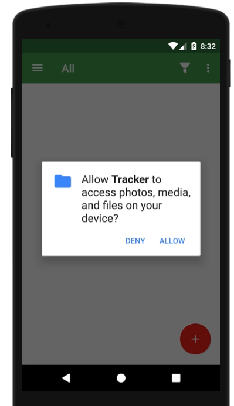
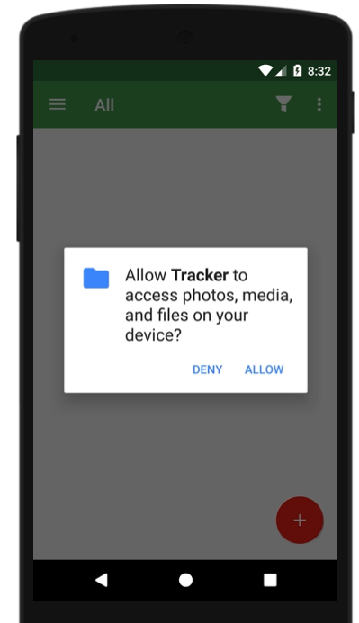
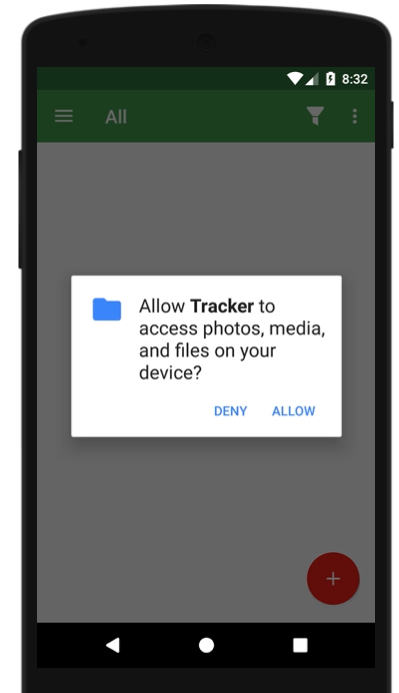

 
Bug summary:
cannot duplicate the setting
Observed Behavior (a description of what happened with the app):
tracker has stopped
Expected Behavior (a description of what you expected to happen):
maybe it can be duplicated
Steps to Reproduce (the steps to reproduce the problem):
1. type in the name
2. save the change
3. duplicate
Additional information:
Attachments:
